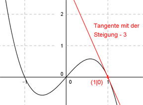

Aufgabe 76 Der Graph einer ganzrationalen, zu (0|0) punktsymmetrischen Funktion 3. Grades, hat im Punkt (1|0) die Steigung -3. Wie lautet seine Funktionsgleichung?  Allgemeine Form einer zu (0|0) punktsymmetrischen ganzrationalen Funktion 3. Grades: f(x) = ax3 + cx f’(x) = 3ax2 + c f’’(x) = 6ax 2 Bedingungen: 1. Hat im Punkt (1|0) die Steigung -3 bedeutet zum einen: f(1) = 0 --> a * 13 + c * 1 = 0 --> a + c = 0 I 2. Hat im Punkt (1|0) die Steigung -3 bedeutet zum anderen: f’(1) = - 3 --> 3a * 12 + c * 1 = - 3 --> 3a + c = -3 II I * (-1) + II -a - c = 0 3a + c = -3 ------------ 2a = -3 |:2 a = -1,5 a = -1,5 in I eingesetzt: -1,5 + c = 0 |+1,5 c = 1,5 Gesuchte Funktionsgleichung: f(x) = -1,5x3 + 1,5x